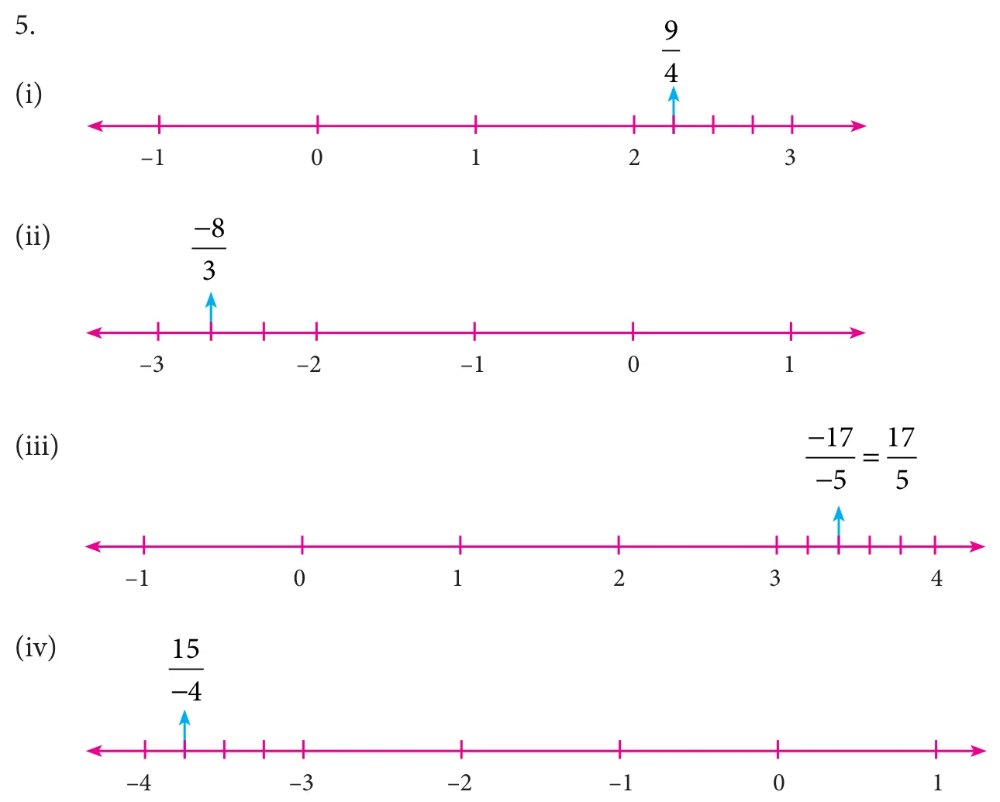
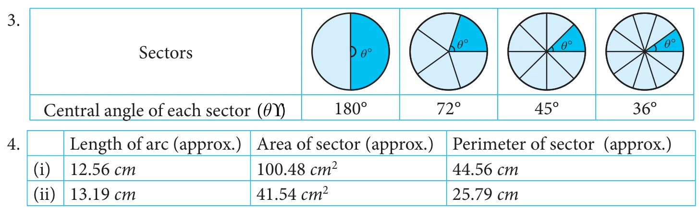
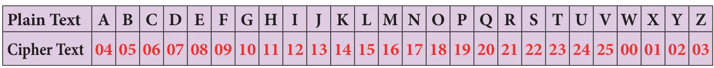

1. NUMBERS
Exercise 1.1
1. (i) \(-4\) and \(-3\) (ii) \(-3.75\) (iii) 0 (iv) \(\frac{30}{-48}\) (v) \(\frac{-29}{39}\)
2. (i) False (ii) True (iii) False (iv) True (v) True
3. (i) \(-\frac{11}{3}\) (ii) \(\frac{-2}{5}\) (iii) \(\frac{7}{4}\) 4. \(Y = \frac{-5}{3}, N = \frac{-4}{3}, A = \frac{9}{4}, T = \frac{10}{4}, I = \frac{11}{4}\)

6. (i) 0.0909... (ii) 3.25 (iii) \(-2.5714285714\) (iv) 1.4 (v) \(-3.5\)
7. (i) \(-2,\ 0 \to \frac{-19}{10}, \frac{-18}{10}, \frac{-7}{10}, \frac{-6}{10}, \frac{-5}{10}\) (ii) \(\frac{-1}{2}, \frac{3}{5} \to \frac{-3}{10}, \frac{-1}{10}, 0, \frac{1}{10}, \frac{2}{10}, \frac{5}{10}\)
(iii) \(0.25,\ 0.35 \to \frac{26}{100}, \frac{27}{100}, \frac{30}{100}, \frac{32}{100}, \frac{33}{100}\) (iv) \(-1.2,\ -2.3 \to \frac{-21}{10}, \frac{-20}{10}, \frac{-15}{10}, \frac{-14}{10}, \frac{-13}{10}\)
8. \(\frac{61}{15}\) and \(\frac{103}{30}\), many answers possible 9. (i) \(\frac{-11}{5} > \frac{-21}{8}\) (ii) \(\frac{3}{-4} < \frac{-1}{2}\) (iii) \(\frac{2}{3} < \frac{4}{5}\)
10. (i) Ascending Order: \(\frac{-11}{8}, \frac{-15}{24}, \frac{-5}{12}, \frac{12}{36}, \frac{-7}{-9}\) Descending Order: \(\frac{-7}{-9}, \frac{12}{36}, \frac{-5}{12}, \frac{-15}{24}, \frac{-11}{8}\)
(ii) Ascending Order: \(\frac{-17}{10}, \frac{-7}{5}, \frac{-19}{20}, \frac{-2}{4}, 0\) Descending Order: \(0, \frac{-2}{4}, \frac{-19}{20}, \frac{-7}{5}, \frac{-17}{10}\)
11. (B) \(\frac{-142}{99}\) 12. (B) \(\frac{16}{-30}, \frac{-8}{15}\) 13. (C) \(-1\) and \(-2\) 14. (A) \(\frac{-17}{24}\) 15. (C) 6
Exercise 1.2
1. (i) \(\frac{1}{20}\) (ii) 1 (iii) 1 (iv) 0 (v) \(-1\)
2. (i) True (ii) False (iii) False (iv) True (v) False
3. (i) 2 (ii) \(\frac{74}{35}\) (iii) \(\frac{4}{15}\) (iv) \(2\frac{3}{4}\) 4. \(\frac{-15}{11}\) 5. (i) \(\frac{-1}{4}\) (ii) \(\frac{8}{45}\)
6. (i) \(-6\) (ii) \(\frac{1}{13}\) (iii) 5 7. (i) \(-7\) (ii) \(\frac{7}{11}\)
8. \(\frac{23}{2}\left(=11\frac{1}{2}\right)\) and hence lies between 11 and 12. 9. (i) \(\frac{133}{60}\) (ii) \(\frac{-5}{2}\) 10. 120
11. (A) 1 12. (C) \(\frac{5}{8}\) 13. (B) \(\frac{2}{3}\) 14. (D) \(\frac{15}{16}\) 15. (D) all of these
Exercise 1.3
Verify yourself for Qns 1 to 6.
7. (C) 0 8. (D) associative 9. (A) \(\frac{1}{8} - \frac{1}{8} = 0\) 10. (B) subtraction
Exercise 1.4
1. (i) 9 (ii) 48 (iii) 5 (iv) 3 (v) 13, 14
2. (i) True (ii) True (iii) False (iv) False (v) True
3. (i) 289 (ii) 41209 (iii) 1205604 4. (i) No (ii) No (iii) Yes (iv) Yes
5. (i) 12 (ii) 16 (iii) 28 (iv) 34 (v) 69 (vi) 95
6. (i) 42 (ii) 83 (iii) 105 (iv) 134 (v) 647 7. (i) 21 (ii) 28 (iii) 32
8. (i) 1.7 (ii) 8.2 (iii) 1.42 (iv) \(\frac{12}{15}\) (v) \(2\frac{5}{7}\) 9. 105, 81 10. 2, 60
11. (A) 9 12. (D) \(7^{2}\) 13. (C) 7 14. (D) \(\sqrt{32}\) 15. (B) 5
Exercise 1.5
1. (i) 7 (ii) 6 (iii) 42 (iv) 30 (v) 0.017
2. (i) True (ii) True (iii) False (iv) True (v) True 4. 5 5. 5 6. 120
7. 9, 19 8. \(\sqrt{36} = 6\) 9. \(\sqrt{3} = 1.732\) 10. 4, 16
Exercise 1.6
1. (i) 1 (ii) 1 (iii) \(20^{-3}\) (iv) \(\frac{-1}{128}\) (v) \(-243\)
2. (i) True (ii) False (iii) False (iv) True (v) False
3. (i) \(\frac{1}{8}\) (ii) 32 (iii) \(\frac{-216}{125}\) (iv) 16 (v) 6
4. (i) \(\frac{64}{15625}\) (ii) \(\frac{4}{5}\) (iii) 1024 5. (i) \(\frac{21}{2}\) (ii) 5 (iii) 1
6. (i) 1 (ii) \(\frac{3}{2}\) (iii) 72 7. (i) \(x = 5\) (ii) \(x = 6\)
8. (i) \(6 \times 10^{3} + 5 \times 10^{1} + 4 \times 10^{0} + 3 \times 10^{-1} + 2 \times 10^{-2} + 1 \times 10^{-3}\)
(ii) \(8 \times 10^{2} + 9 \times 10^{1} + 7 \times 10^{0} + 1 \times 10^{-1} + 4 \times 10^{-2}\)
9. (i) 87652.0407 (ii) 5050.505 (iii) 0.000000000025
10. (i) \(4.678 \times 10^{11}\) (ii) \(1.972 \times 10^{-6}\) (iii) \(1.642398 \times 10^{3}\)
(iv) \(1.083 \times 10^{12}\) cu. km (v) \(1.6 \times 10^{-24}\)
11. (B) \(\frac{-2}{5}\) 12. (A) \(\frac{-1}{32}\) 13. (D) \(-\left(\frac{1}{4}\right)^{2} = 16^{-1}\) 14. (C) 6 15. (D) \(2.02 \times 10^{-10}\)
Exercise 1.7
Miscellaneous Practice Problems
1. 4 kg 300 gm 2. \(10\frac{2}{5}\) litre 3. both are correct 4. 6 m 5. \(552\ \text{cm}^{2}\)
6. 9 cm and 10 cm 7. 15 decimetre 8. 625 9. 8
10. (i) \(4.8 \times 10^{3}\) (ii) \(1.152 \times 10^{5}\) (iii) \(4.2048 \times 10^{7}\) (iv) \(4.2048 \times 10^{9}\)
Challenging Problems
11. 900 km 13. 320 gm 14. \(\frac{9}{20}\) 15. \(x = 3\) 16. \(\frac{12}{11}\) 17. No, 64
18. 58.85 19. \(7.979 \times 10^{5}\) 20. \(8^{100}, 2^{600}, 3^{500}, 4^{400}, 16^{25}\)
2. MEASUREMENTS
Exercise 2.1
1. (i) \(\pi\) (ii) chord (iii) diameter (iv) 12 cm (v) circular arc
2. (i) c (ii) d (iii) e (iv) b (v) a

5. (i) \(240\ \text{m}^{2}\) (ii) \(337.5\ \text{cm}^{2}\) 6. (i) \(\theta = 120^{\circ}\) (ii) \(\theta = 72^{\circ}\) 7. \(30\pi\ \text{m}\)
8. \(980\pi\ \text{cm}^{2}\) 9. \(706.5\ \text{cm}^{2}\) (approximately) 10. \(1232\ \text{cm}^{2}\) (approximately)
Exercise 2.2
1. (i) 38 m, \(50.75\ \text{m}^{2}\) (approximately) (ii) 30 cm, \(40.25\ \text{cm}^{2}\) (approximately)
2. (i) \(21.5\ \text{cm}^{2}\) (approximately) (ii) \(27.93\ \text{cm}^{2}\) (approximately)
3. \(48\ \text{cm}^{2}\) 4. \(41.13\ \text{cm}^{2}\) (approximately) 5. \(5600\ \text{cm}^{2}\) 6. \(3500\ \text{cm}^{2}\) 7. \(244\ \text{m}^{2}\)
Exercise 2.3
1. (i) length, breadth and height (ii) Vertex (iii) Six (iv) Circle (v) Cube
2. (i) (b) (ii) (a) (iii) (d) (iv) (c)
3. (i) Cube (ii) Cuboid (iii) Triangular Prism (iv) Square Pyramid (v) Cylinder
4. (i) F, T, S (ii) T, S, F (iii) S, F, T
5. (i) Yes (ii) No (iii) Yes (iv) No (v) Yes
Exercise 2.4
Miscellaneous Practice Problems
1. 9.42 feet 2. 314 m 3. \(128\ \text{cm}^{2}\)
4. (i) Top View, Front View, Side View (ii) Top View, Front View, Side View


Challenging Problems
5. double door requires the minimum area 6. \(63.48\ \text{m}^{2}\) (approximately)
7. \(1.46\ \text{cm}^{2}\) (approximately) 8. (i) \(F = 10\) (ii) \(V = 4\) (iii) \(E = 28\)
3. ALGEBRA
Exercise 3.1
1.
| \(x\) | \(2x^{2}\) | \(-2xy\) | \(x^{4}y^{3}\) | \(2xyz\) | \(-5xz^{2}\) |
|---|---|---|---|---|---|
| \(x^{4}\) | \(2x^{6}\) | \(-2x^{5}y\) | \(x^{8}y^{3}\) | \(2x^{5}yz\) | \(-5x^{5}z^{2}\) |
| \(4xy\) | \(8x^{3}y\) | \(-8x^{2}y^{2}\) | \(4x^{5}y^{4}\) | \(8x^{2}y^{2}z\) | \(-20x^{2}yz^{2}\) |
| \(-x^{2}y\) | \(-2x^{4}y\) | \(2x^{3}y^{2}\) | \(-x^{6}y^{3}\) | \(-2x^{3}y^{2}z\) | \(5x^{3}yz^{2}\) |
| \(2y^{2}z\) | \(4x^{2}y^{2}z\) | \(-4xy^{3}z\) | \(2x^{4}y^{5}z\) | \(4xy^{3}z^{2}\) | \(-10xy^{2}z^{3}\) |
| \(-3xyz\) | \(-6x^{3}yz\) | \(6x^{2}y^{2}z\) | \(-3x^{5}y^{4}z\) | \(-6x^{2}y^{2}z^{2}\) | \(15x^{2}yz^{3}\) |
| \(-7z\) | \(-14x^{2}z\) | \(14xyz\) | \(-7x^{4}y^{3}z\) | \(-14xyz^{2}\) | \(35xz^{3}\) |
2. (i) \(24m^{4}n^{2}\) (ii) \(-9x^{5}y^{6}\) 3. \(-24p^{6}q^{6}\)
4. (i) \(10xy - 15x\) (ii) \(-10p^{3} + 6p^{2} - 14p\) (iii) \(3m^{4}n^{4} - 15m^{3}n^{2} + 21m^{2}n^{3}\)
(iv) \(x^{3} + y^{3} - z^{3} + x^{2}y + x^{2}z + xy^{2} + zy^{2} + xz^{2} - yz^{2}\) 5. (i) \(4x^{2} - 2x - 12\)
(ii) \(2y^{4} + 3y^{3} - 8y^{2} - 12y\) (iii) \(5m^{4}n^{2} - m^{2}n^{2} - 5m^{2}n^{3} + n^{3}\) (iv) \(6x^{2} - 36x + 30\)
6. (i) \(-2x^{2}\) (ii) \(-3mp\) (iii) \(2y(5x^{2}y - x + 3y^{2})\) 7. (C) iv, v, ii, iii, i 8. \(xy + 2x + 30y + 60\)
9. (B) \(28p^{7}\) 10. (D) \(mn^{2}, -27\) 11. (C) \(6x^{2}y\) 12. (A) \(6mn\) 13. (B) \((a+b)\)
Exercise 3.2
1. (i) \(\frac{18m^{4}(n^{8})}{2m^{(3)}n^{3}} = 9mn^{5}\) (ii) \(\frac{l^{4}m^{5}n^{(7)}}{2lm^{(3)}n^{6}} = \frac{l^{3}m^{2}n}{2}\) (iii) \(\frac{42a^{4}b^{5}(c^{2})}{6(a)^{4}(b)^{2}} = (7)b^{3}c^{2}\)
2. (i) True (ii) False 3. (i) \(9y^{2}\) (ii) \(xy\) (iii) \(-3x^{2}yz^{3}\) (iv) \(xy\)
4. (i) \(5m\) (ii) \(3p^{3}q^{2}\) 5. (i) \(16y - 4z\) (ii) \(2mn^{2} + 8m^{3}n - \frac{1}{2}\) (iii) \(\frac{5}{6}y - 3xy^{2} + 1\)
(iv) \(= 9p^{2}r + 18pq - 45\)
6. (i) \(9y^{2}\) (ii) \(9xy\) (iii) \(4m^{2} - 3m\) (iv) \(16n^{2} - 2n + 3\) (v) \(x^{2} + 1x - 6\) (vi) \(-(3p^{2} - 4p + 7)\)
7. (ii) A is true but B is false 8. (i) both A and B are true
Exercise 3.3
1. (i) \(9m^{2} + 30m + 25\) (ii) \(25p^{2} - 10p + 1\) (iii) \(4n^{2} + 4n - 3\) (iv) \((2p + 5q)(2p - 5q)\)
2. (i) \(m^{3} + 9m^{2} + 27m + 27\) (ii) \(8a^{3} + 60a^{2} + 150a + 125\) (iii) \(27p^{3} + 108p^{2}q + 144pq^{2} + 64q^{3}\)
(iv) 14,0608 (v) 1124864
3. (i) \(125 - 75x + 15x^{2} - x^{3}\) (ii) \(8x^{3} - 48x^{2}y + 96xy^{2} - 64y^{3}\) (iii) \(a^{3}b^{3} - 3a^{2}b^{2}c + 3abc^{3} - c^{3}\)
(iv) 110, 592 (v) \(912673x^{3}y^{3}\)
4. \(p^{3} - 5p^{2} + 2p + 8\) 5. \(x^{3} + 3x^{2} + 3x + 1\) 6. \(x^{3} - 2x^{2} - 5x + 6\)
7. (C) 2 8. (B) \(a^{2} + ab + b^{2}\) 9. (A) \(p^{3} + q^{3}\) 10. (D) 72 11. (D) \(3ab(a+b)\)
Exercise 3.4
1. (i) \(6y(3x - 2z)\) (ii) \(3x^{2}y(3x^{3}y^{2} + 2xy - 6)\) (iii) \((b - 2c)(x + y)\)
(iv) \((x + y)(a + b)\) (v) \((4x - 1)(2x^{2} - 1)\) (vi) \((x - 2)[3y(x - 2) + 2]\)
(vii) \(2y(9x - 2y - zx)\) (viii) \((a - 3)(a^{2} + 1)\) (ix) \(3y(y + 4)(y - 4)\) (x) \((b - 1)(ab - c^{2})\)
2. (i) \((x + 7)^{2}\) (ii) \((y - 5)^{2}\) (iii) \((c + 2)(c - 6)\)
(iv) \((m + 9)(m - 8)\) (v) \((2x - 3)(2x - 1)\) 3. (i) \((4x + 3)^{3}\) (ii) \((3p + 2q)^{3}\)
4. (i) \((y - 6)^{3}\) (ii) \((2m - 5n)^{3}\) 5. (D) \(3x, (3x+2y)\) 6. (C) \((2+m)(2-m)\)
7. (D) \(x^{2} - x - 20\) 8. (B) 3 9. (C) \((1 - m)(1 + m + m^{2})\) 10. (B) \((x+y)\)
Exercise 3.5
Miscellaneous Practice Problems
1. \(7x^{2}y^{5} + 4x^{4}y^{3} + 60x^{2}y^{2}\) 2. \(12x^{3} - 8x^{2} + 27x - 18\) 3. \(S.I = \frac{7}{5}a^{3}b^{4}\)
4. \(\frac{1}{2}a + 2b + 4\) 5. \((y - 3)(7y + 2)\)
Challenging Problems
6. \(4x + 3\) 7. \(x + 2\) 8. \((y + 7)(y + 8)\) 9. \((4p^{2} + 1)(2p + 1)(2p - 1)\) 10. \(3(x - 5y)^{3}\)
Exercise 3.6
1. (i) \(x = 7\) (ii) \(y = 11\) (iii) \(m = 7\) (iv) \(p = 15\) (v) One
2. (i) True (ii) False 3. (c) (iii), (i), (iv), (v), (ii)
4. (i) \(x = 11\) (ii) \(y = \frac{1}{-4}\) (iii) \(x = -1\) 5. (i) \(x = -4\) (ii) \(p = -1\) (iii) \(x = -11\)
6. (i) \(x = -2\) (ii) \(m = -4\)
Exercise 3.7
1. (i) \(x = -\frac{b}{a}\) (ii) Positive (iii) \(x = 30\) (iv) \(40^{\circ}\) (v) \(b = 9\)
2. (i) True (ii) False (iii) False 3. 3, 21 4. 27
5. \(l = 8\) cm, \(b = 24\) cm 6. (80, 10) notes 7. Murali's is 15 years old, Thenmozhi's age is 20 years old 8. 63 9. \(\frac{13}{21}\)
10. 37.4 km 11. (B) 20 12. (A) \(62^{\circ}\) 13. (C) 10000 14. (C) 4 15. (D) \((x - 1)\)
Exercise 3.8
1. (i) Origin (0,0) (ii) negative (iii) y-axis (iv) zero (v) X-Coordinate
2. (i) True (ii) True (iii) False
Exercise 3.9
1. (i) Origin (ii) (4, −4) (iii) x-axis 1 cm = 3 units, y-axis 1 cm = 25 units
2. (i) True (ii) False
Exercise 3.10
Miscellaneous Practice Problems
1. \(x = 20\) 2. \(60^{\circ}, 40^{\circ}, 80^{\circ}\) 3. \(y = 11\) units, \(p = 133\) units 4. \(116^{\circ}, 64^{\circ}\)
Challenging Problems
6. 7, 8, 9 7. 54 8. 12 pencils
4. LIFE MATHEMATICS
Exercise 4.1
1. (i) \(x = 500\) (ii) \(3\frac{1}{3}\%\) (iii) \(x = 50\) (iv) 70% (v) 52.52%
2. (i) 50% (ii) 75% (iii) 100% (iv) 96% (v) \(66\frac{2}{3}\%\)
3. \(x = 150\) 4. 30 5. \(33\frac{1}{3}\%\) 6. 110 7. \(x = 200\) 8. \(x = 100\) 9. No change
10. 87% 11. (C) 20% 12. (B) 49% 13. (A) 375 14. (D) 200 15. (D) 36
Exercise 4.2
1. (i) Cost price (ii) ₹7000 (iii) ₹600 (iv) 8% (v) ₹945
2. ₹900 3. ₹670 4. 50% 5. \(11\frac{1}{9}\%\) 6. ₹1152
7. (i) \(x =\) ₹207 (ii) \(y =\) ₹12600 (iii) \(z = 18\%\) 8. ₹2836
9. Discount of 8% is better 10. ₹5400
11. (C) 25% 12. (B) 550 13. (C) ₹176.40 14. (D) ₹250 15. (A) 40%
Exercise 4.3
1. (i) ₹1272 (ii) ₹820 (iii) ₹20,000 (iv) \(A = P\left(1 + \frac{r}{400}\right)^{4n}\) (v) ₹32
2. (i) True (ii) False (iii) True (iv) False (v) True
3. ₹162 4. ₹1082 5. ₹1875 6. \(1\frac{1}{2}\) years 7. ₹10,875 8. ₹0.50
9. 5% 10. ₹16000 11. (C) 6 12. (B) 1 year 13. (B) ₹12500
14. (A) ₹2000 15. (D) ₹2500
Exercise 4.4
1. (i) 2 (ii) 5 (iii) 8 (iv) 25 (v) ₹1,20,000 2. 162 men
3. 7000 cement bags 4. \(7\frac{1}{2}\) days 5. 4 more lorries 6. 4 hours
7. A - 30 days, B - 20 days, C - 60 days 8. 180 minutes 9. 16 days 10. 6 days
Exercise 4.5
Miscellaneous Practice Problems
1. 400 2. 300 3. ₹41013 4. 20% 5. \(2\frac{2}{9}\%\) loss 6. 48 men 7. 6 days 8. 8 days
Challenging Problems
9. \(\frac{8}{25}\) 10. ₹15000 11. 20% 12. 30% 13. 40 men 14. 3 days 15. ₹6000
5. GEOMETRY
Exercise 5.1
1. (i) in proportion (ii) shape (iii) equal (iv) congruent (v) similar
6. Yes, RHS Congruence 8. \(HE = 18, TE = 16\) 9. \(\angle T = \angle N = 75^{\circ}, \angle E = \angle B = 35^{\circ}, \angle A = \angle U = 70^{\circ}\)
11. (D) matching 12. (A) \(\angle Q = \angle Y\) 13. (D) 93 m 14. (A) \(50^{\circ}\) 15. (C) \(AC = CD\)
Exercise 5.2
1. (i) Q (ii) \(n^{2} - m^{2}\) (iii) a right angled triangle (iv) centroid (v) 2:1
2. (i) True (ii) True (iii) True (iv) True (v) False
3. (i) Yes (ii) No (iii) Yes (iv) Yes (v) Yes
4. (i) \(x = 41\) (ii) \(y = 16\) (iii) \(z = 15\) 5. 5 cm 6. 170 m
7. 10 cm 8. W 9. P 10. 9 cm 11. \(40^{\circ}\)
12. (C) \(45^{\circ}\) 13. (B) 20 cm 14. (C) \(420\ \text{cm}^{2}\) 15. (D) 20, 48, 52
Exercise 5.3
Miscellaneous Practice Problems
3. 48 ft 4. 25 ft 5. No, the wide of cabinet is lesser than the wide of TV
Challenging Problems
8. 40 cm 9. 28 ft 10. (i) 22 (ii) 6 (iii) 16 (iv) 24
6. STATISTICS
Exercise 6.1
1. (i) Secondary (ii) 35 (iii) 197 (iv) 8 (v) Circular
2. (i) False (ii) True (iii) True (iv) True
5. (i) 20% (ii) 75 (iii) 1/4 (iv) 400 (v) 275 (vi) 500
8. (i) ₹8000 (ii) ₹40000 (iii) ₹12000
Exercise 6.2
1. (i) Yes (ii) No (iii) No (iv) Yes (v) Yes
2. (i) Proportional (ii) Histogram (iii) Grouped
3. (i) 330 (ii) 150 (iii) No
9. (D) all the three 10. (C) Frequency 11. (A) range 12. (B) grouped
13. (B) discontinuous 14. (B) Exclusive 15. (C) pie chart 16. (A) continuous
17. (A) frequency polygon 18. (D) histogram
7. INFORMATION PROCESSING
Exercise 7.1
1. 5 2. 9 3. 8 4. 6 5. 4995 6. 10000 7. 15 8. 20
9. (i) 10. (i) (ii)

more possible ways more possible ways
11. (A) 41 12. (B) 8 13. (D) 64 14. (C) 19
Exercise 7.2
1. (i) 13 (ii) 8 (iii) 5 (iv) 46
2. (i) 14 (ii) 4 (iii) 140 (iv) 6
3. (i) 4 (ii) 5 4. 14 5. (C) 89
6. (B) \(F(8) = F(7) + F(6)\) 7. (A) 2 8. (C) 6th 9. (D) 987
10. (A) 2 and 5 11. (D) 3, 2 and 2 12. (D) 1
Exercise 7.3
1. (i) TAMIL (ii) ENGLISH (iii) MATHEMATICS (iv) SCIENCE (v) SOCIAL SCIENCE
2. (i) c (ii) d (iii) a (iv) e (v) b
3.

4. To understand that mathematics can be experienced everywhere in nature and real life.
5. (i) 28 (ii) CHAIR (iii) GIFT VOUCHER
6. (C)
7. (i) (A) C R D T (ii) (D) A D G J
8. (ii) 5 6 3 4 2 1 9. (i) (C) R F U Q N P C (ii) (C) U D G L R
Exercise 7.4
1. (i) 5 Chocolate bars for ₹175b (ii) 15 eggs for ₹64.50
2. ₹634 3. ₹39.25 4. ₹809 5. (D) all the above
6. (C) something that I need to purchase
7. (B) Compare the choices before buying

Mathematics - Class 8 Text Book Development Team Reviewers Academic Advisor Dr. R. Ramanujam Dr. P. Kumar
Professor, Joint Director (Syllabus), Institute of Mathematical Science, SCERT, Chennai. Chennai.
Academic Co-ordinator R. Athmaraman V. Ilayarani Mohan
Educational Consultant, Assistant Professor, Association of Mathematics Teachers of India, SCERT, Chennai. Chennai.
Art and Design Team
Content Writers Layout and Illustration
G. KamalanathanB.T. Assistant, B. Yogesh, C. Prasanth, A. Adison GHSS, Arpakkam, R. Mathan Raj, Sridhar Velu
Kancheepuram. In-House QC
K. Gunasekar P. Arun Kamaraj
B.T. Assistant, Wrapper Design PUMS, Vallavanur West, Kathir Aarumugam Koliyanur Block,
Villupuram. Layout Co-ordinator
G.Palani Ramesh Munisamy
B.T. Assistant,
GHS, Jagadab, EMIS Technology Team
Krishnagiri. R.M. Satheesh, State Coordinator Technical, TN EMIS, Samagra Shiksha.
P. Malarvizhi K.P. Sathya Narayana, IT Consultant,
B.T. Assistant, TN EMIS, Samagra Shiksha. Chennai High School, Strahans Road, Pattalam, Chennai. R. Arun Maruthi Selvan, Technical Project Consultant, TN EMIS, Samagra Shiksha.
ICT Coordinator D. Vasuraj
P.G. Assistant, KRM Public School,
This book has been printed on 80 GSM Sembiyam, Chennai. Elegant Maplitho paper Printed by offset at :
Typist K. Punitha
Triplicane, Chennai.